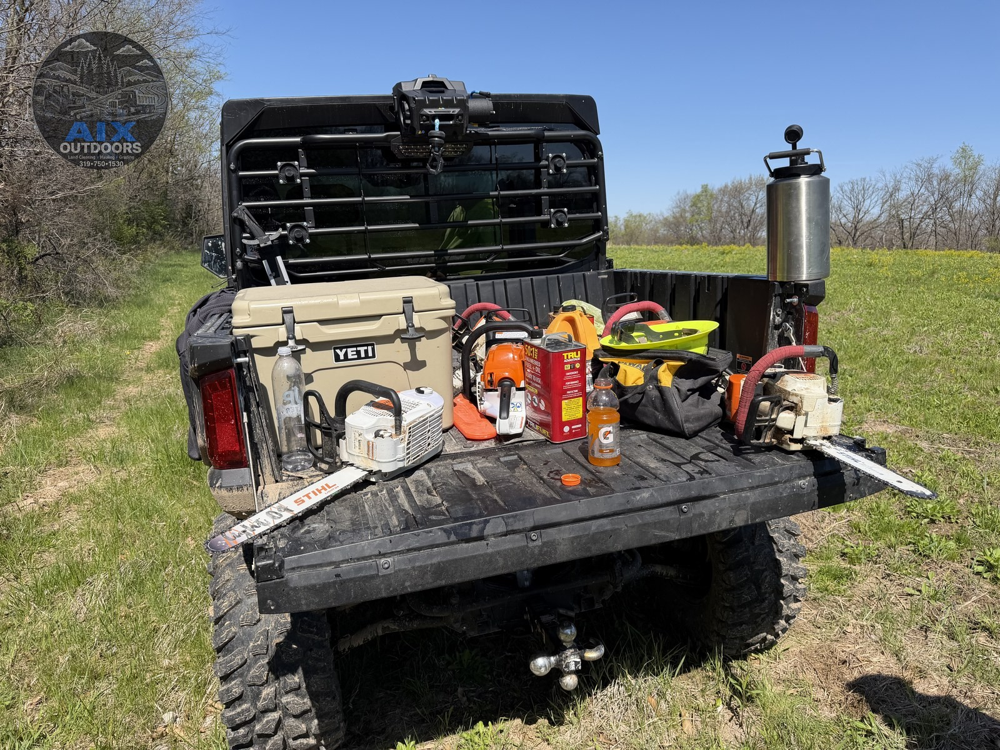

Timber stand improvement · TSI
Selective thinning, canopy work, and hardwood-focused timber stand improvement that strengthens wildlife habitat and the long-term value of your woods. Hunting stand lanes when that is part of the plan.
Timber stand improvement (TSI) means selective thinning — removing competing or low-value stems and opening the canopy so higher-quality hardwoods and wildlife habitat get light and room to grow. Whether the goal is healthier timber, improved hunting cover, or simply cleaner, more usable woods, we tailor the work to the property and the landowner’s objectives. Hunting stand lanes, quiet approaches, and pads are part of the same toolkit when you hunt that ground.
TSI and stand work are scoped to your woods and objectives — free estimate, not a catalog price.
Sound familiar?
More than a brush pass
Timber stand improvement opens the canopy and favors the stems worth keeping. We thin selectively so hardwoods and wildlife habitat recover with more light and less competition. When hunting stands are part of the plan, we still cut only the lanes that matter, keep the approach quiet, and leave your hardware, cameras, and ladders alone — we don’t sell stands; we make the woods and the sits work.
When TSI isn’t the right tool
Merchantable timber sales and logger harvests are a different conversation. If a stand location simply doesn’t hunt, we’ll say moving it beats cutting lanes that dress up a bad tree. We scope TSI to your objectives — healthier timber, wildlife habitat, or cleaner woods — not a one-size clearcut.
Timber stand improvement · real job footage
Targeted TSI: girdling and selective cuts remove competing stems so higher-quality hardwoods and wildlife habitat get more light — without a full clearcut.
Timber stand improvement · real job photos
Still photos from TSI and timber workdays. Picture the same prep on your wooded acreage.

Pricing · SAMPLE
TSI is scoped by stem count, canopy goals, and access. Hunting stand lanes and approaches are often priced per stand when that work is included.
Sample from $275 / stand for lane and approach work (design sample — not a bid).
What changes the number